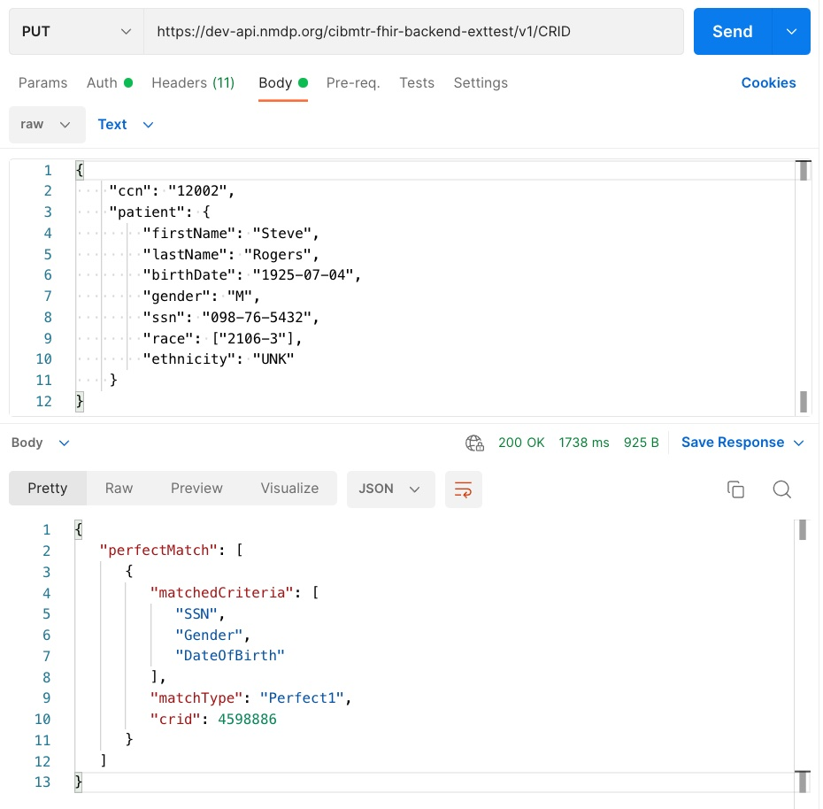

CIBMTR Reporting Implementation Guide
0.1.6 - Trial Use 1
CIBMTR Reporting Implementation Guide
0.1.6 - Trial Use 1
This page is part of the CIBMTR Reporting Implementation Guide (v0.1.6: Release Draft) based on FHIR R4. This is the current published version. For a full list of available versions, see the Directory of published versions 
The client must search for a patient that has been previously registered with CIBMTR, or register a new patient. In either case, the client will receive from the CRID service a CIBMTR Research Identifier (CRID) to be used as a patient resource identifier for all subsequent FHIR data submissions. CIBMTR exposes a special service API to handle the submission of personally identifiable information (PII). Data submitted via the externally available CRID API endpoint has special protections and exposure within CIBMTR to avoid unnecessary handling of PII. For all subsequent FHIR data submissions, the CRID is used to identify the patient and any PII is removed from FHIR resources before being stored on CIBMTR FHIR servers.
The CRID API uses a PUT request at the following case-sensitive endpoint URLs:
PUT <base URL>/CRID
The authorization key and bearer token must be included in the request as mentioned in the previous section. For the body of the PUT request, the following data fields are requested:
Five required attributes
Optional attributes (possibly present)
Complete list of payload options for CRID registration is shown below. Note that this is not a FHIR JSON object, but rather is a CIBMTR specific JSON format.
{
"ccn": "string",
"patient": {
"firstName": "string",
"lastName": "string",
"birthDate": "string",
"gender": "string",
"ssn": "string",
"mothersMaidenName": "string",
"race": ["string"],
"ethnicity": "string",
"nmdpRid": 0,
"ebmtCic": "string",
"cibmtrIubmid": "string",
"cibmtrTeam": 0,
"ebmtId": "string"
}
}
CRID Race Codes
| Race Value Code | Description |
|---|---|
| 1002-5 | American Indian or Alaska Native |
| 2028-9 | Asian |
| 2054-5 | Black or African American |
| 2076-8 | Native Hawaiian or Other Pacific Islander |
| 2106-3 | White |
| ASKU | Not Reported |
| UNK | Unknown |
CRID Ethnicity Codes
| Ethnicity Value Code | Description |
|---|---|
| 2135-2 | Hispanic or Latino |
| 2186-5 | Non Hispanic or Latino |
| UNK | Unknown |
Because the CRID API is available as a PUT request, submitting the same data twice does not re-register the patient, but rather will retrieve the same CRID number registered previously. The CRID API will attempt to perform partial “fuzzy” matches based on data submitted to avoid re-registering the same patient with two different CRID numbers.
The response payload of the CRID Service API is a JSON object that contains the CRID number (lower pane in Figure). The CRID number is then used for all other data references to the registered patient.
|  |
|---|
| Figure 1: Example CRID registration PUT request with JSON body payload (top pane) and response payload (bottom pane) |
Python
#!/usr/bin/env python3
import json
import requests
from pathlib import Path
# Replace patient variable with your patient demographic data.
# Below is just an example.
patient = {
"ccn": "12002",
"patient": {
"firstName": "Steve",
"lastName": "Rogers",
"birthDate": "1925-07-04",
"gender": "M",
"ssn": "098-76-5432",
"race": ['2106-3'],
"ethnicity": "UNK"
}
}
tokenfile = Path('token.txt') # Bearer token was previously captured in token.txt
authstring = 'Bearer ' + tokenfile.read_text()
headers = {'Authorization': authstring,
'Content-Type': 'application/json'}
r = requests.put('https://dev-api.nmdp.org/cibmtr-fhir-backend-exttest/v1/CRID',
json=patient,
headers=headers)
if r:
print(json.dumps(r.json(), indent=4))
else:
print(r.status_code)